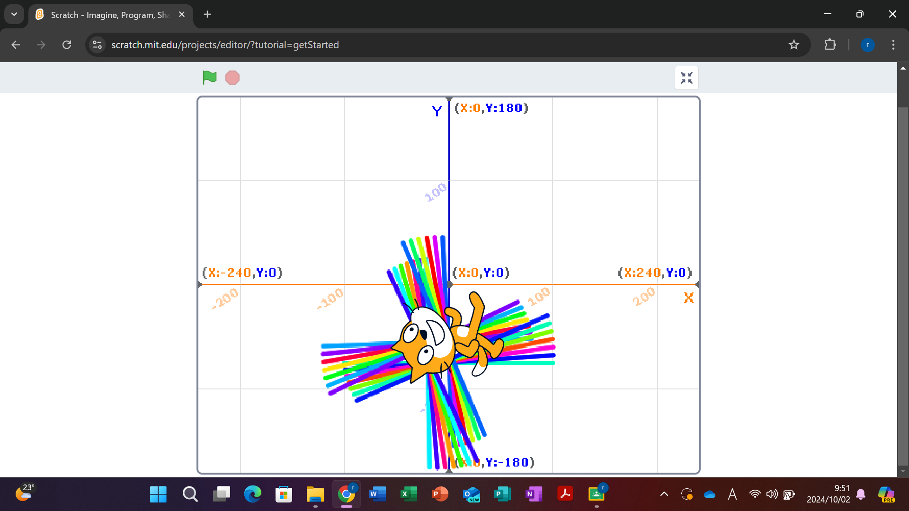

1-1 サイエンスアート

1.内容
スクラッチを使って線を書くプログラムを作り、猫を縦横に往復させることで花火のような模様を作った。
また、線を引くたびに変わる角度を変えることで様々な模様へと変えられるということが分かった。
さらに、毎度色を変えるプログラムを組むことで色鮮やかな模様も作ることができた。
2.感想
角度や色を変えることで全然違う模様を作ることができたので面白かった。
また、プログラミング自体が様々な動きの組み合わせでできていてとても複雑なものであると感じた。
難しそうだけど自分自身でもやってみたいなと思った。